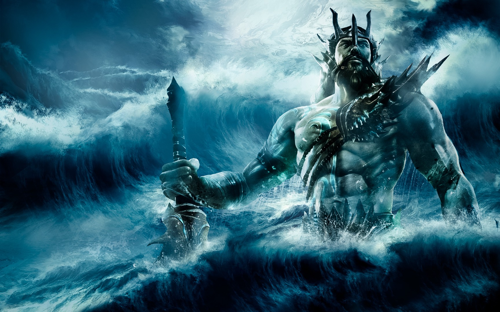

Poseidon was generally regarded as an ill-tempered being. His mood was a reflection of the state of his realm. He was thought to conjure up violent storms at sea when angered. While he was married to the goddess Amphitrite, one of the Nereids, like his brother Zeus, Poseidon had a number of affairs with other goddesses and mortal woman, siring such heroes as Theseus and Bellerophon. Lord of the waters, Poseidon was both patron and protector of both sailors and seafarers, who would pray to him for safe passage across the sea. Poseidon was often regarded as the “Father of Horses,” as they were thought to be his creations.